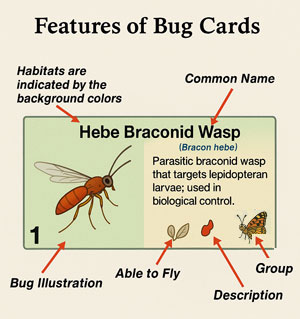
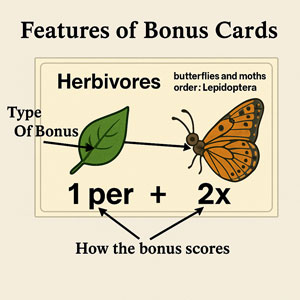
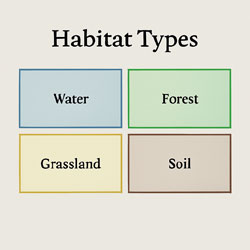
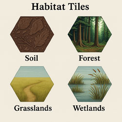
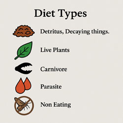
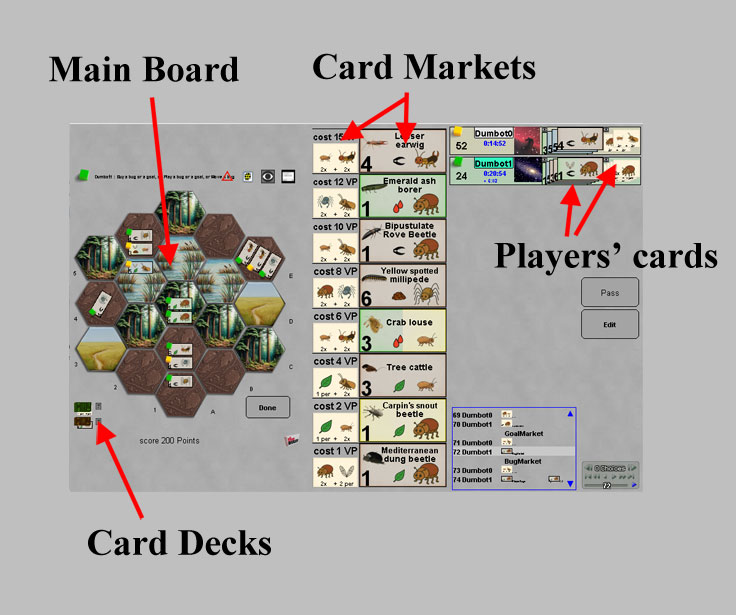
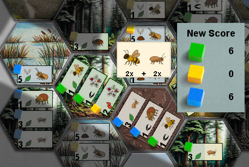

|
|
|
Components
|  |  |
|  |  |  |
Set Up:
|  |
Bonus Scoring ExampleGreen scores for 2 bees plus their wild card. The green barklouse doesn't score because it is oriented differently. Since green has no matches for barklice, the green wildcard is not scored a second time.Yellow wildcard does not score, because there are no other yellow bugs that score. Blue barklouse scores because it matches the bonus. |  |
| E-Mail: | Go to BoardSpace.net home page |